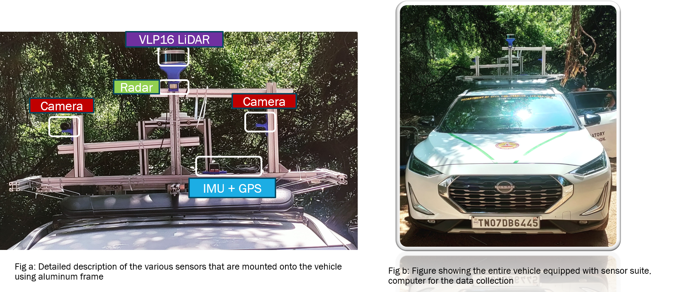
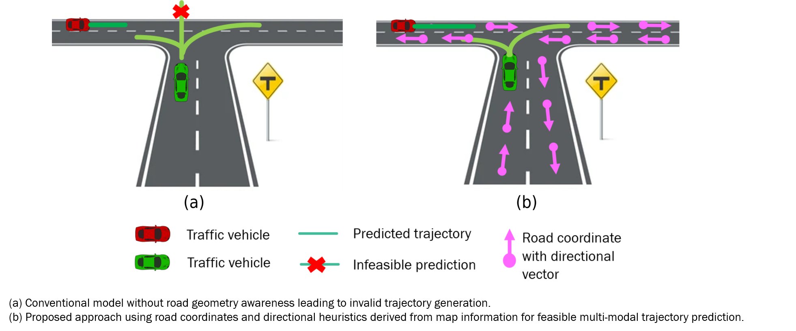
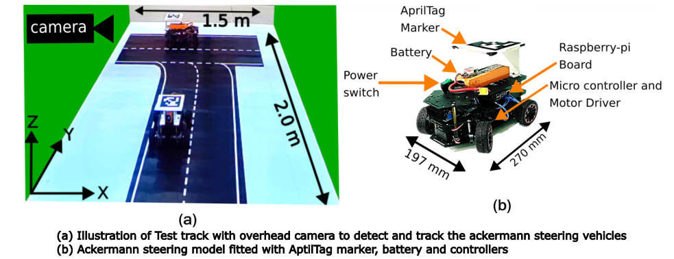
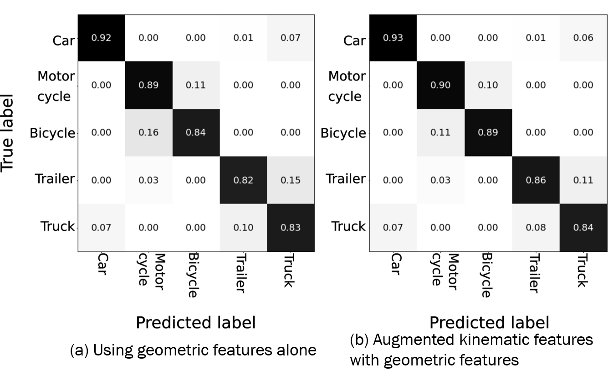

Vehicle on-off road classification and free-space mapping for ADAS perception pipeline
Developed rule-based algorithm to label traffic vehicle positioning relative to road boundary, executed in 100ms with 97% accuracy.
Focused on efficient road-lane mappings and using static road features to improve overall classification accuracy.
Identifying and mapping free-space boundary around the ego vehicle using its surrounding traffic participants.
Awarded two high customer satisfaction certificates from leading Japanese automotive client for the contributions.
Tools: C++, R.O.S
Software Engineer, PathPartner (KPIT)
Oct 2021 - Jan 2023
Develop, optimize and port image/audio processing algorithms on edge DSPs (TI C66x/C67x, Tensilica HiFi4/HiFi5, CEVA X2; SoC: TDA4x)
Used intrinsics and assembly-level techniques (register reuse, instruction pipelining, SIMD/vectorization, loop optimizations) to minimize cycle count and increase throughput.
Focused on loop-level and memory-access optimizations to maximize SIMD utilization.
Tools: C, Assembly
Research Experience
Development of Perception Capabilities for Autonomous Driving Applications
Role: Research Scholar (M.S.) | Feb 2024 – Nov 2024
Supervisors: Dr. Bijo Sebastian (Autonomous Systems Lab), Dr. Lelitha Vanajakshi (Intelligent Transportation Systems Lab)
Performed sensor integration and registration; collected time-synchronized multimodal data (camera, LiDAR, IMU, GPS) for algorithm evaluation.

Development of Detect-Classify-Track pipeline for ADAS applications using camera, 3D LiDAR, IMU, GPS.
Performed object detection on 3D LiDAR point clouds using DBSCAN clustering and ground plane segmentation with RANSAC; fused classification with YOLOv8 from camera images (via LiDAR–camera calibration).
Tracked vehicles using an EKF and performed data association using Mahalanobis distance and Hungarian algorithm.
Localized the ego-vehicle in OpenStreetMap using G.P.S and I.M.U information.
Classification accuracy of 62% with execution time < 0.5 seconds for the developed perception pipeline.
Tools: C++, Python, ROS, NumPy, OpenCV
Multi-hypotheses Trajectory Prediction of On-Road Vehicles Using Monte Carlo-Extended Kalman Filter with Map Constraints
Role: Research Scholar (M.S.) | Dec 2024 – Apr 2025
Accepted for presentation at IEEE International Conference on Smart Technologies for Power, Energy, and Control (STPEC), December 2025.
Supervisors: Dr. Bijo Sebastian (Autonomous Systems Lab), Dr. Lelitha Vanajakshi (Intelligent Transportation Systems Lab)
Designed a multi-hypotheses trajectory prediction framework for real-time autonomous driving scenarios.

Overall MC-EKF Framework
Implemented map-based pruning to eliminate infeasible trajectory hypotheses.
Conducted experiments on Ackermann steering RC vehicles with sensor suite integration.

Experimental Setup with Ackermann Vehicles
Benchmarked performance across multiple motion models; CTRV showed least error with minADE = 0.101 m.
Quantitative Results
Motion Model
minADE (m)
minFDE (m)
minADE1 (m)
minFDE1 (m)
CV
0.108
0.223
0.125
0.232
CA
0.159
0.301
0.222
0.334
CSARA
0.125
0.194
0.159
0.244
CTRV
0.101
0.202
0.121
0.237
CTRA
0.166
0.250
0.289
0.364
Table: Quantitative comparison of the proposed framework using different motion models for a 3-second prediction horizon.
Tools: Python, ROS, NumPy, Matplotlib, OpenCV
Fusion of Geometric and Kinematic Features for LiDAR-Based Vehicle Classification
Role: Research Scholar (M.S.) | Jun 2025 – present
Supervisors: Dr. Bijo Sebastian (Autonomous Systems Lab), Dr. Lelitha Vanajakshi (Intelligent Transportation Systems Lab)
Motivated by challenges in vision-based vehicle classification under adverse environmental conditions, this project leverages LiDAR’s robustness to lighting and weather(dust, smog, haze), aiming to improve distinguishing similar vehicle shapes with fused geometric and kinematic features.
While cameras suffer from quality degradation in varying light, LiDAR provides reliable depth and geometry information, making it ideal for this task.
RADAR provides similar features as LiDAR but at a lower cost, offers better velocity estimates of surrounding vehicles, but has reduced field of view (FoV), which can be mitigated by using multiple RADAR sensors.
Developed a LiDAR-only vehicle classification framework by integrating geometric and kinematic features to resolve ambiguities between similarly shaped vehicles such as bicycles and motorcycles.
Applied machine learning models including Random Forest and XGBoost with feature augmentation, achieving a +4% accuracy gain on challenging classes and an overall accuracy of 89% on the NuScenes dataset.
Carefully curated vehicle classes to focus on challenging geometric similarities.
Ongoing research includes development of deep neural networks for kinematic feature extraction and trajectory prediction tailored by vehicle category.

Confusion matrix computed on real-world NuScenes dataset.